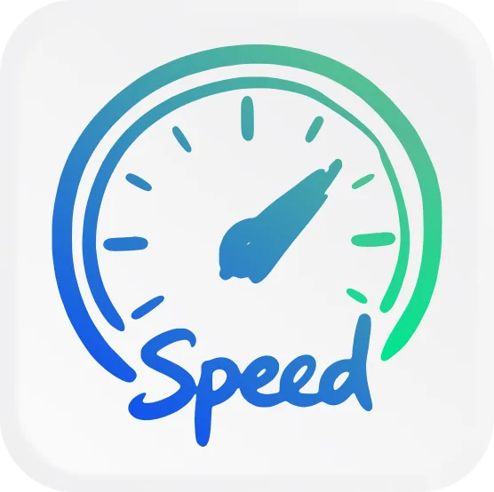
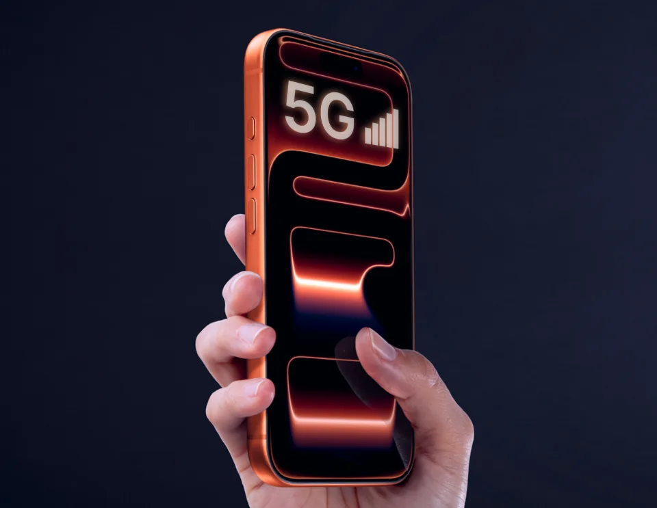

and reconnects even on unstable connection.
You need streaming services
- for work
- for content
- for leasure

Uninterrupted connection required
So you need seamless connection for steaming content. Reconnects, buffering,
pauses kill streaming experience.
Primary connection could fail
But your current primary connection could be not so smooth.
You could travel or stay places with limited connection.

backup connection
And for sure you can use your mobile as a backup
connection.
But it could be too expensive for streaming...
Automatic switching between primary & backup connections
Connect Buddy MacOS App auto-switches primary and backup connections depending on its quality making
service connection always stable. It minimizes usage of backup one saving your money.
And the most cool thing is hidden seamless switching - no service relogins, reconnects, rebufferings,
content loss. Your streaming service even doesn't know that you switches internet connection.
FAQ
Connect Buddy is a MacOS app that automatically switches between your primary and backup internet connections, keeping your streaming sessions uninterrupted.
Connect Buddy constantly monitors the quality of your primary and backup connections and switches between them the moment it detects a drop, without any manual input.
No. Switching happens seamlessly in the background, so your streaming service stays connected with no relogins, reconnects, or content loss.
Connect Buddy works with mobile hotspots, secondary Wi-Fi networks, and wired connections, so you can pick whatever backup fits your setup.
Launching soon
Get stable seamless Streaming without glitches and session reconnects. With any provider. At home or a
trip.
Just for $6.99 per month.